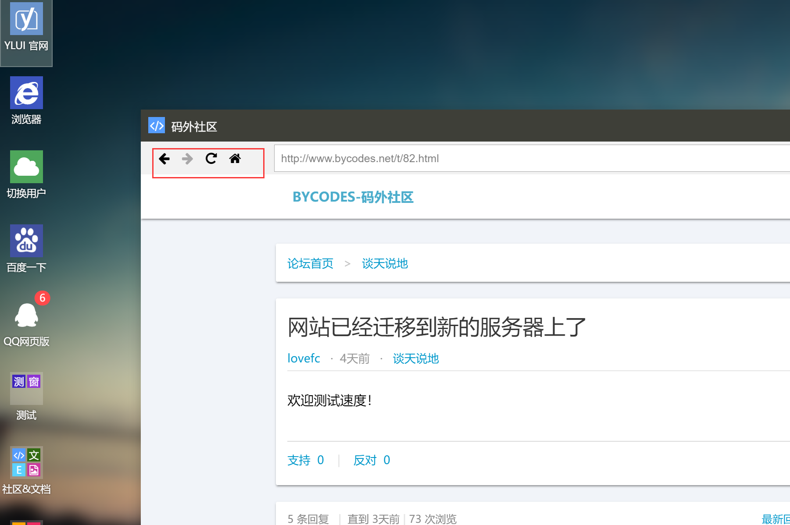
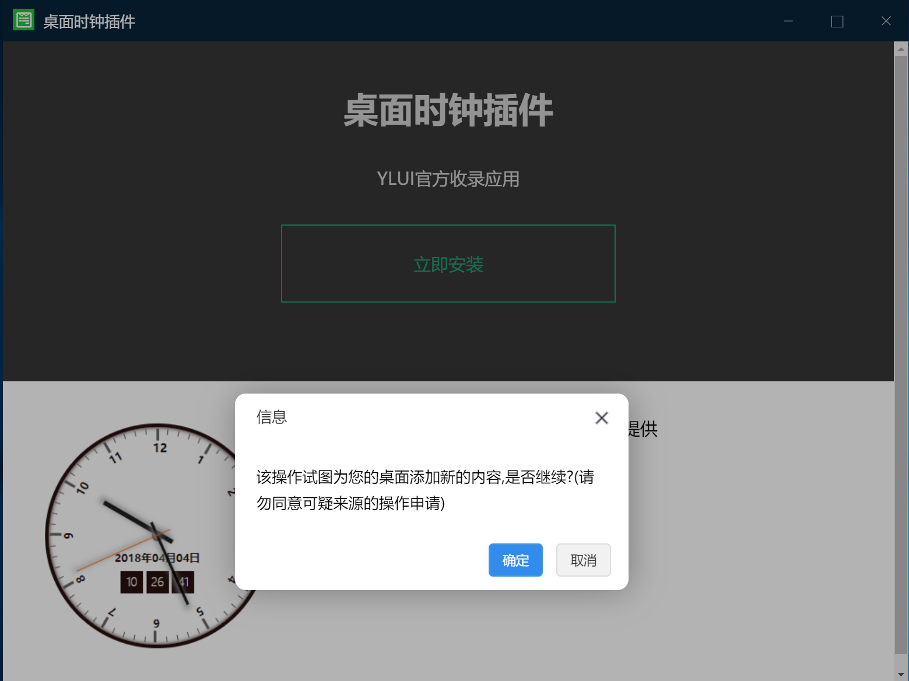

窗体API指窗体在运行过程中可以使用的API，得益于YLUI精巧的设计，跨域的窗体也能实现一些强大的功能。
对于同域的窗体，可以使用
parent.window来获取父窗体（YLUI主体）的所有全局对象，自然也就可以为所欲为。但是我们依然推荐开发者使用YLUI的窗体API模式，来获取更安全、更低耦合的开发体验。
首先要使用 窗体API ，我们需要在窗体页面引入js文件：/res/yl.app.js，你可以将这个文件放置在其他位置，只要能正确加载到即可。
没错，对于最基本的使用，只需要加载yl.app.js文件，你甚至不需要写其他代码。
成功接入窗体API 后，窗体将获得以下特性

每个窗体被打开，YLUI都会为它分配一个id。子窗口通过YLApp.id可以获取。
如果获取后为空，可能是当前APP不是运行在YLUI下，或尚未初始化。
data是这个窗体在被创造时赋予的数据，常被用于窗体通信。
例如，通过这个窗体a新建一个窗体b，可以为b的data赋值
parent:a的id来标记创建者。
url string 打开新窗体的url地址
立即在YLUI中打开一个新窗口。此处参数只有一个url，简单而常用的一个API。
可以替代传统的a标签打开新窗口。
cb function 回调函数
接受到YLUI事件时触发，cb为事件处理函数（高级）。
YLUI主体会广播一些公共事件，它们分别为
未来会加入更多公共事件
###YLApp.getWinObject(id)
id string 目标窗体id
return window object
获取指定窗体的window对象，仅在同域有效。
cb function 回调函数
接受到YLUI事件时触发，cb为事件处理函数（高级）。
event string 事件名
data mixed 数据
target string|array|true 广播对象
发送一个事件。其中。如果target是string类型，表示发送给对应id的窗口；如果target是数组，表示发送给数组中所有id对应的窗体；如果target为true，表示发送给所有窗体。
特别的，YLUI主体的id为0。
method string 方法名
data mixed 数据
cb function 回调函数
主动向YLUI发布指令或请求数据，完成后触发回调，请求结果会传递到回调函数的第一个参数上。
YLApp.eval的形式。参数为id的方法，如果id为空，则默认是当前窗体的id
| method | data | return | 描述 |
|---|---|---|---|
| getID | int | 返回YLUI的一个id流水号 | |
| getVersion | string | 返回YLUI的当前版本 | |
| historyBack | string id | 指定id窗体后退 | |
| historyBackAvailable | string id | bool | 指定id窗体是否可以后退 |
| historyForward | string id | 指定id窗体前进 | |
| historyForwardAvailable | string id | bool | 指定id窗体是否可以前进 |
| refresh | string id | 刷新指定id窗体 | |
| setWinData | object data | 设置当前窗体的数据 | |
| getWinData | object | 获取当前窗体的数据 | |
| setWallpaper | string urlImg | 设置壁纸为urlImg图片 | |
| setThemeColor | string color | 设置主题色 | |
| getConfigs | object | 获取配置 | |
| getRuntime | object | 获取运行时数据 | |
| open | object|array data | string | 打开窗体，返回窗体id。具体调用方式参看7.1全局API YL.open，其中，data为array对应了YL.open两个参数的用法 |
| close | string id | 关闭指定id的窗体，如果未指定id，关闭本窗体 | |
| minimize | string id | 最小化指定id的窗体 | |
| maximize | string id | 最大化指定id的窗体 | |
| hide | string id | 隐藏指定id的窗体 | |
| show | string id | 显示指定id的窗体 | |
| restore | string id | 还原指定id的窗体 | |
| msg | array data | 推送消息。data[0]为标题，data[1]为正文 | |
| simpleMsg | string data | 发送简单的文本提示信息 | |
| setAppBadge | array|string|int data | bool | 设置APP的角标值；如果data为数组，data[0]为角标值，data[1]为APP id；如果data为数字或字符串，设置窗口所属APP的角标为data；返回操作是否成功 |
| getAppVersion | string id | string | 返回指定id窗体或当前窗体所属APP的版本号 |
| uninstall | string|array data | 卸载应用。data为string卸载指定id的应用，data为array卸载多个应用 | |
| import | object data | 【需要受信任APP权限】导入数据，重载YLUI | |
| export | object | 【需要受信任APP权限】导出YLUI存档数据 | |
| eval | string data | 【需要受信任APP权限】在YLUI主体执行eval | |
| setup | object data | 安装。见下文 |
setup是比较复杂而强大的指令，可以为YLUI动态添加APP和快捷方式。利用它你可以很快打造出一个YLUI应用商店。

data 的数据结构如下。其中，每一项不是必须存在的（比如只想添加图标不想添加磁贴，则可以省去tiles属性）。
{
apps:{...},
shortcuts:[...],
sidebar:[...],
tiles:[...],
menu:{...},
}
apps 需要传入多个新增/修改app的数据结构，形如{my_app1_id:{my app1 data ...},my_app2_id:{my app2 data ...}}。
APP的数据格式可以参阅
6.3应用程序池。
shortcuts 需要新增的多个桌面图标数据，形如[{data1 ...},'my_app2_id']，相当于调用了YL.addShortcut函数。
sidebar 需要新增的多个侧边栏按钮的数据，形如[{data1 ...},'my_app2_id']，相当于调用了YL.addSidebarBtn函数。
tiles 需要新增的多个磁贴的数据，形如[{data1 ...},'my_app2_id']，相当于调用了YL.addTile函数。
menu 需要新增的多个菜单项的数据，形如{item1_id:{item1_data ...},item2_id:{item2_data ...}}。
注意菜单项的id不能与其他项重复。菜单项的数据格式可以参阅
6.6开始菜单。